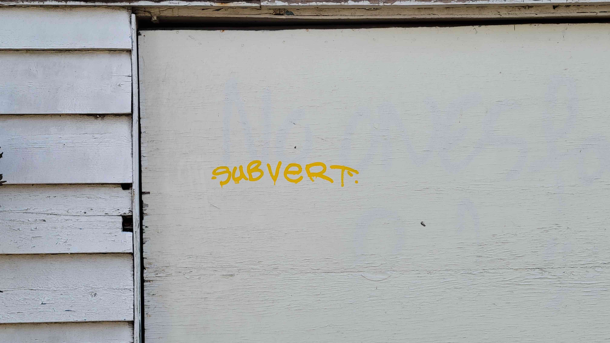

INTERFERENCE

In this section I explicate how, in my theorization, deep mapping is not defined by opposition so much as marked by (iterative acts of) interference. Drawing from an encounter at the beach and a year later, with Barad (2007), I argue that deep mapping is a diffractive apparatus for generating interferences and studying how the effects of these interferences come to matter. Deep mapping is process oriented. My thesis is an account of process, how research practices matter.
The field is not a site separate from the researcher but rather produced through intra-actions (giving research presentation, for example, or leaning against a bridge) that reveal similarities and differences - ripples of affect eliciting visceral responses like sweaty palms, heavy breathing, rapid heart beat. I locate myself neither above nor outside the field, but rather within and as part of the world, my site of interference shifting so as to be always the line drawn at the limit of legibility - the boundary of the intelligible form. Yet the limit is exposed as the limit in the moment of its interference, when its complementary state - that which it has relegated to negative space, is hailed as intelligible. Interference at once reveals where the line [limit of intelligibility] is drawn, and refigures it by valorizing what it has othered.
Transgression carries the limit right to the limit of its being; transgression forces the limit to face the fact of its imminent disappearance, to find itself in what it excludes" (Foucault 1977, 34, emphasis mine)